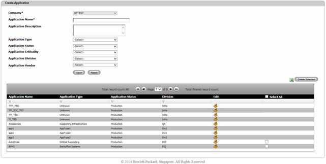
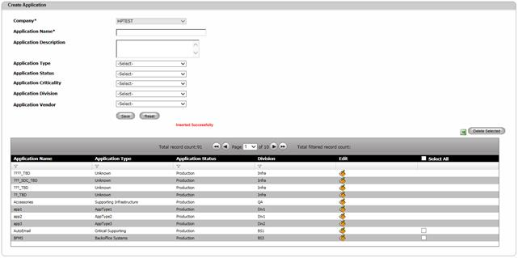

Create Application
The Create Application screen will enable users to maintain Applications.
Can I create an Application of the same name?
No. Application name should be unique. While adding a new application, System will display an error message if the site with the same name already exists.
To create an Application,
1. Navigate Application>>Create Application on the DCTrackMobileWeb menu bar.
You will see the Application screen.

Figure 195: Application screen
2. Enter information for the required field.
3. Application Type, Application Criticality, Application Status, Division and Vendor are optional fields. Application Type and Application Criticality defines what kind of application it is and criticality of the application. Application Status defines whether it is a production, test or development application. Application Division specified to which department or group this application belongs to. Vendor is the name of the company or organization that developed this application.
4.
Click Save  button to complete the creation process or else
click Reset
button to complete the creation process or else
click Reset  button to refresh the page fields.
button to refresh the page fields.
Upon saving, you will see the successful creation message and the created Application listed on the Table View.

Figure 196: Application Screen – Successful Creation